Actual damage range: 0–0.0005. Yellow does not mean complete failure. The hollow diamond marks the manufactured streaming region 0.2 mm upstream of the clot. No bond failure or detachment occurred in this run.
Display: 60 fps, true displacement, fixed camera. Position interpolation only; damage retains recorded macro-step values. The manufactured field is a verification model. Mesh convergence and physical fragmentation have not been established.
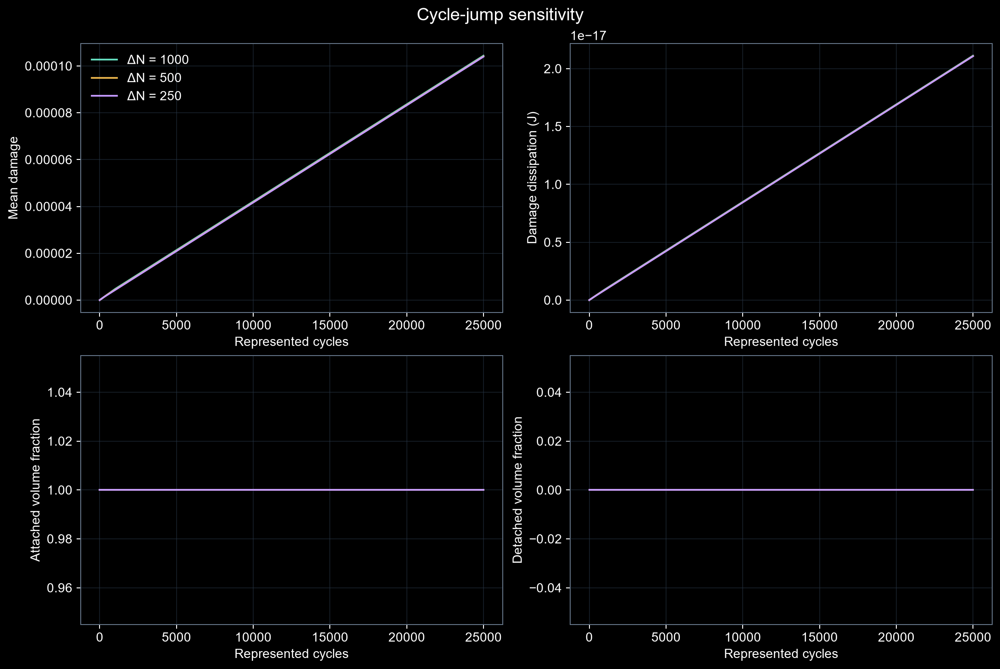
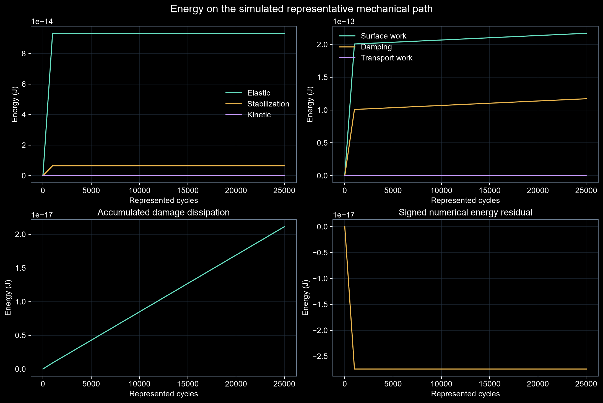
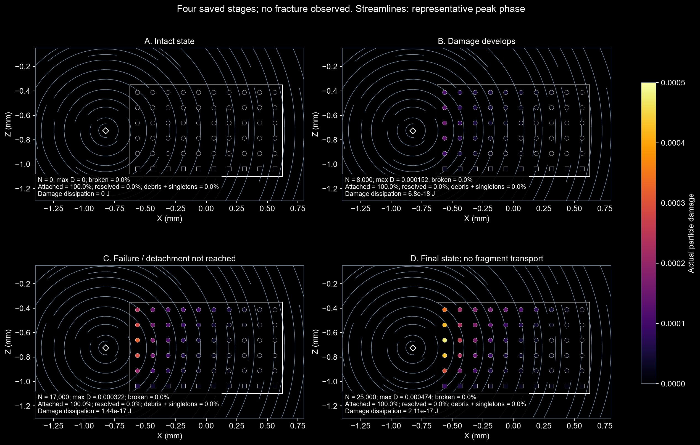
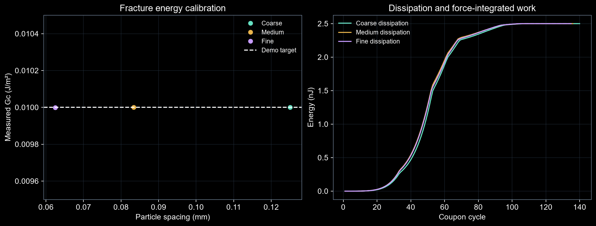
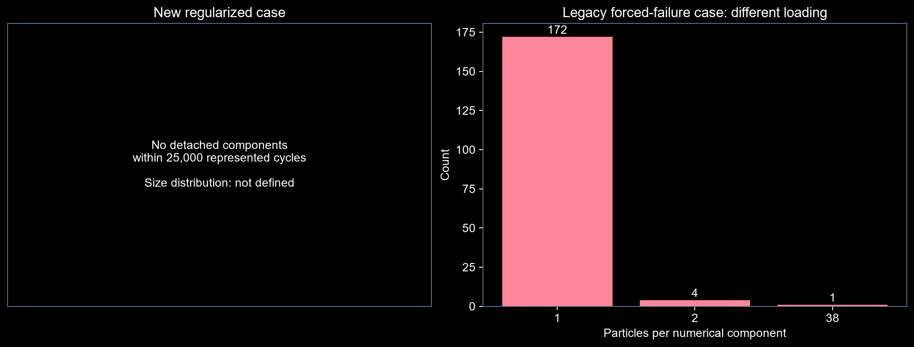
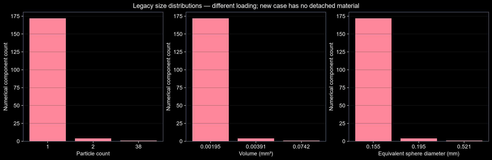
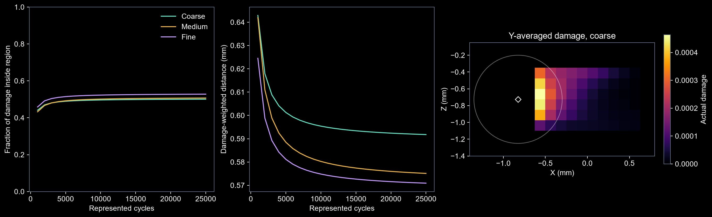
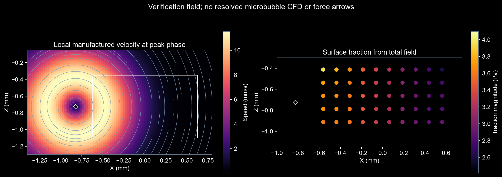
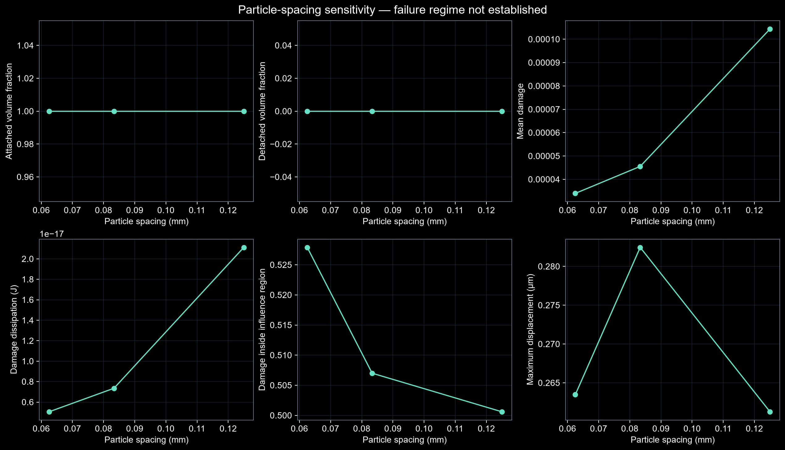
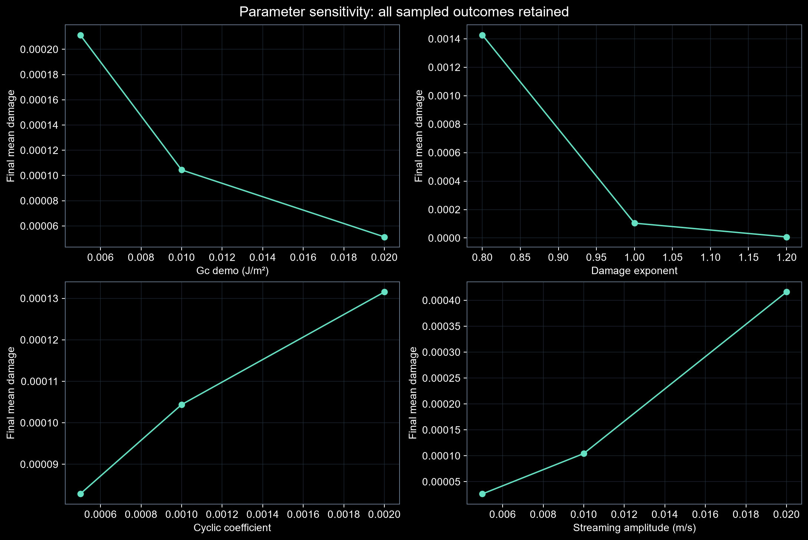
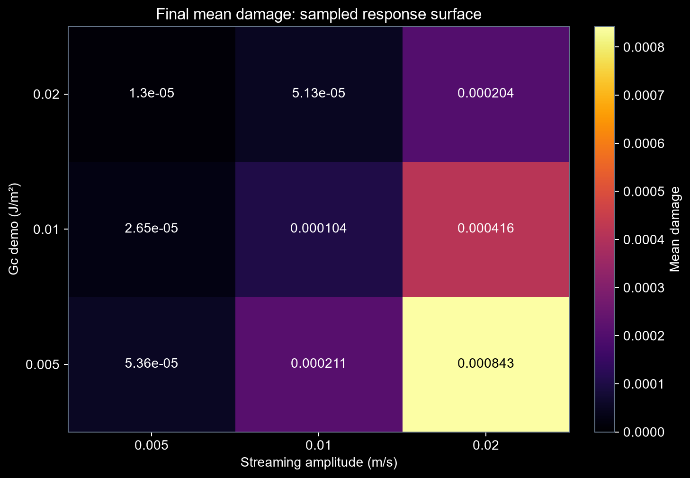
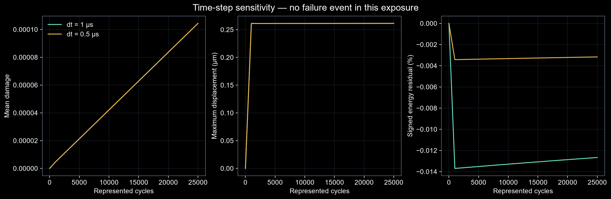
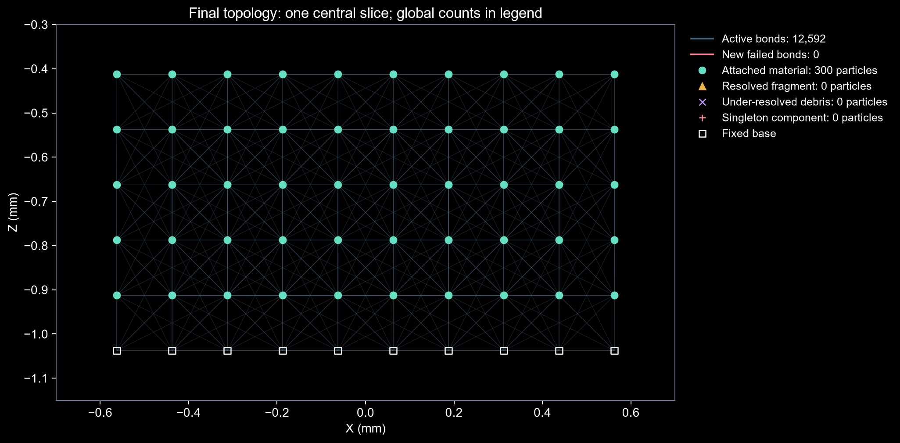